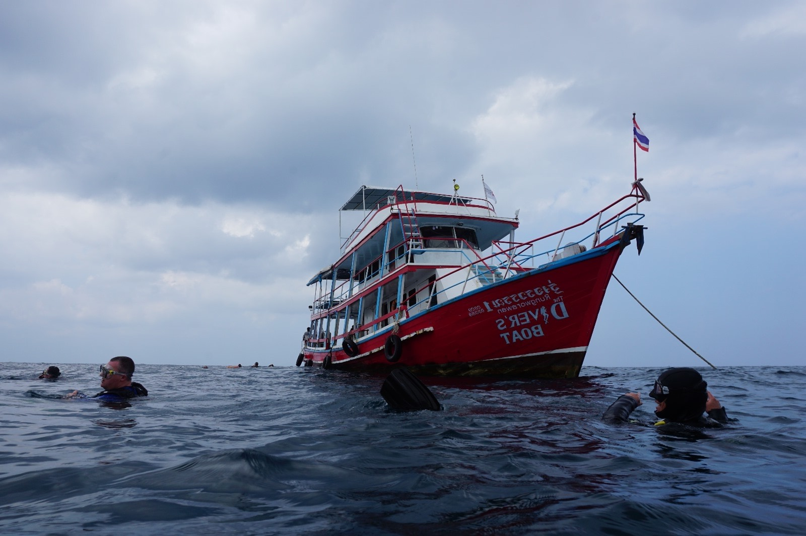
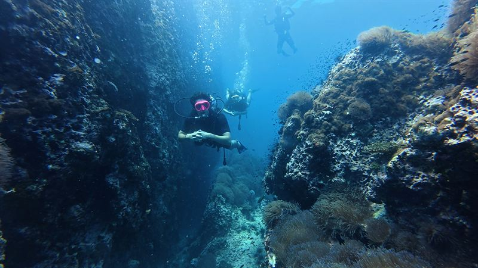
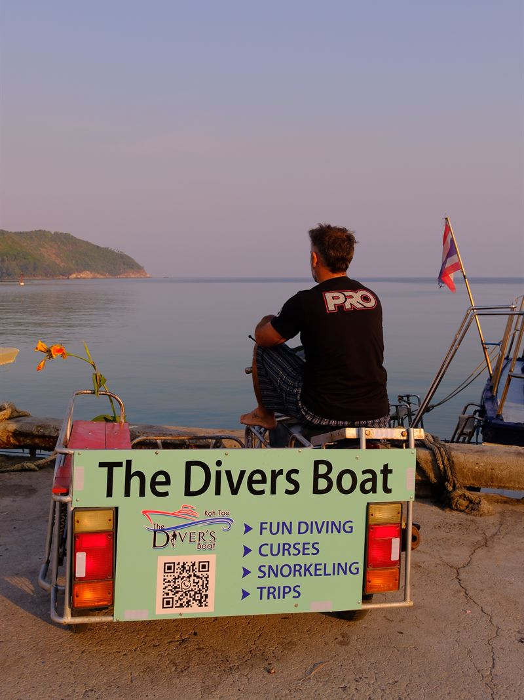

Assist the guides
Diving next to our guides, watching how they manage a group and helping them do it.

Home / SSI courses / Divemaster
One month, unlimited diving and a mentor who works alongside you every day. We train only two or three divemasters a year, so each one gets real time, real responsibility and a real place on the boat. 36,000฿.

Unlimited diving for a month
At a glance
SSI Divemaster is the first professional rating: you learn to plan dives, brief a boat full of divers and guide them underwater. Here you learn it with Boris, our manager and lead instructor, who runs every Divemaster course himself.
Not included: your annual SSI professional fees, paid to SSI when you certify.

Boris · Chaloklum pier
How we teach it
This is not a course about learning a lot of theory. It is about sharing experience, and that means spending a lot of time together — on the boat, in the water and in the shop.
You will assist different guides and instructors, sometimes at other dive centres too. Seeing people work in different ways is how you learn the most, and how you find your own way of doing things.
During the month
A divemaster's job is guiding certified divers, so that is what the month is built around — step by step, always with someone experienced beside you.
Diving next to our guides, watching how they manage a group and helping them do it.
Explaining to every guest how the boat works and how to move around it safely.
Planning the dive and briefing the group, with feedback after every one.
Leading divers underwater at Sail Rock and our other sites, with a professional behind you.
How a dive centre runs day to day, and how the equipment is looked after.
To certify

Deep, Night and Navigation
Before you start
No Advanced yet? We offer the Deep, Night and Navigation specialties together for 18,500฿. We recommend them over the Advanced: as a divemaster you cannot guide divers deeper than your own certification allows, and navigation is one of the most important skills a guide has.
After the course
Good divemasters can stay on and work with us. Lily finished the Divemaster with us in 2026 and now guides on our boat.
About equipment: it is best to have your own full set by the end of the course, because you will need it to work. We know it is expensive, so we lend gear during the course and help you find good second-hand equipment.
I recently completed my Dive Master certification with Boris at The Divers Boat in Koh Phangan, and it was an incredible experience from start to finish.
Boris is one of the most professional and capable divers I have had the opportunity to dive with. His knowledge and experience in the field is exceptional. His teaching style is fun yet very informative!
Questions
36,000฿, with one month of mentoring, unlimited diving and the Science of Diving specialty included. At the end you pay your annual SSI professional fees directly to SSI.
About one month. You need at least 60 logged dives to certify, and the unlimited diving is there to get you there.
18 years old, SSI Rescue Diver and React Right, Advanced Open Water or the Deep, Night and Navigation specialties, 40 logged dives to start, a medical statement signed by a doctor, and an interview with Boris.
We offer the Deep, Night and Navigation specialties together for 18,500฿. They are more useful than the Advanced for a future guide: you can only guide divers as deep as your own certification allows, and navigation is essential for guiding.
A mask and a dive computer from the first day. We lend the rest during the course and help you find good second-hand gear, but ideally you should have your own full set by the end, when you start working.
Boris, our manager and lead instructor, teaches every Divemaster course himself. He has been a dive professional since 2015, an instructor since 2022, and has more than 5,000 dives.
Yes, it is possible. Our divemasters can stay on and work with us — Lily, who certified in 2026, is guiding on our boat now.
Yes. We help you find somewhere to stay for the month.
Every Divemaster starts with a conversation. Message Boris on WhatsApp with your certifications, number of dives and when you would like to start.
Still working towards it? See the Rescue Diver course or all our courses.